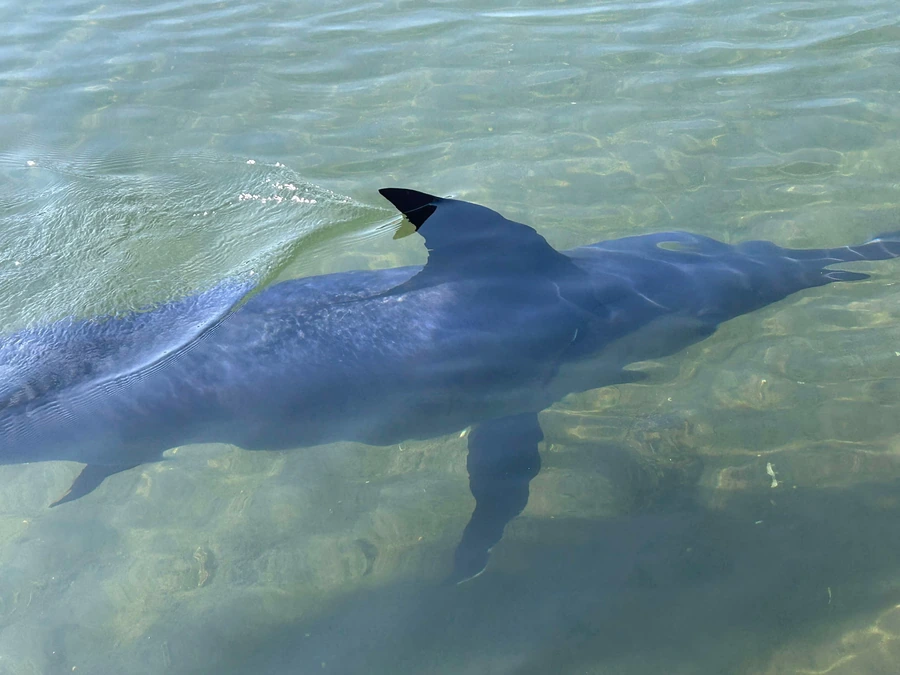

鱼类 · 动物界
剑鱼 Xiphias gladius

上颌延长成扁平长剑的大型远洋鱼类，能潜入深海捕食，游泳速度极快，是全球重要的大型经济鱼类。
- 分类
- 门脊索动物门纲硬骨鱼纲目鲈形目科剑鱼科属剑鱼属
- 栖息环境
- 热带、亚热带和温带的远洋水域，白天可潜入数百米深的冷水层
- 地理分布
- 全球热带、亚热带和温带海洋，包括大西洋、太平洋、印度洋和地中海
- 保护级别
- IUCN 无危（LC）；中国未列入国家重点保护野生动物名录
物种志
剑鱼体呈流线型，上颌极度延长成扁平的剑状吻部，可占体长的三分之一。成鱼没有牙齿，也没有鳞片，没有腹鳍，背鳍两个，第一背鳍高大呈帆状，尾鳍为新月形。体色背部暗褐或蓝灰，腹部浅色。体长一般 2–3 m，体重常见 100–300 kg，最大记录体长超过 4 m、体重可超过 500 kg。
剑鱼是暖水性远洋鱼类，广泛分布于全球热带、亚热带和温带海域，常单独活动。它具有明显的昼夜垂直迁移行为：白天潜入 500–800 m 的深水，夜间上浮到表层捕食，用剑状吻部击晕或刺穿鱼群中的猎物，也捕食乌贼和甲壳类。剑鱼的眼部有特殊的加热器官，能让眼球和脑部温度高于水温 10 ℃ 以上，在冷水中保持敏锐的视力。它卵生，雌鱼可产数百万粒卵，幼鱼有牙齿和鳞片，长大后逐渐消失。全球种群目前尚属稳定，IUCN 将其评为无危，中国未将其列入国家重点保护野生动物名录。
形态与习性
- 食性捕食鱼类、乌贼和甲壳类，用剑状吻部击刺猎物
- 体长一般 2–3 m，最大记录超过 4 m
- 体重常见 100–300 kg，最大可超过 500 kg
- 深度白天可潜至 500–800 m 深水，夜间上浮到表层
- 体温眼部有加热器官，可使眼球和脑部温度高于水温
- 繁殖卵生，雌鱼可产数百万粒卵
趣味知识
- 剑鱼成鱼没有牙齿也没有鳞片，幼鱼时期却有，长大后会逐渐消失。
- 它的眼部加热器官能把眼球和脑部加热到高于水温 10 ℃ 以上，利于在冷水中捕猎。
- 剑鱼体内的汞含量较高，许多国家的膳食指南建议儿童和孕妇少吃。